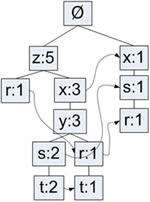
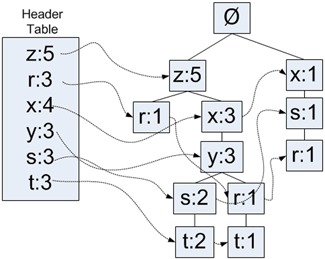

使用FP-growth算法来高效发现频繁项集
FP-growth算法只会对数据库进行两次扫描，而Apriori算法对于每个潜在的频繁项集都会扫描数据集判断给定模式是否频繁，因此FP-growth算法的速度要比Apriori算法快。
FP树：用于编码数据集的有效方式
FP-growth算法
优点：一般要快于Apriori
缺点：实现比较困难，在某些数据集上性能会下降
适用数据类型：标称型数据类型
FP-growth算法将数据存储在一种称为FP树的紧凑数据结构中。FP代表频繁模式（Frequent Pattern）。一颗FP树看上去与计算机科学中的其他树结构类似，但是它通过链接（link）来连接相似元素，被连起来的元素项可以看成一个链表。

同搜索树不同的是，一个元素可以在一棵FP树中出现多次。FP树会存储项集的出现频率，而每个项集会以路径的方式存储在树中。存在相似元素的集合会共享树的一部分。只有当集合之间完全不同时，树才会分叉。树节点上给出集合中的单个元素以及在序列中的出现次数，路径会给出该序列的出现次数。
相似项之间的链接即节点链接（node link），用于快速发现相似的位置。
| 事务ID | 事务中的元素项目 |
|---|---|
| 001 | r, z, h, j, p |
| 002 | z, y, x, w, v, u, t, s |
| 003 | z |
| 004 | r, x, n, o, s |
| 005 | y, r, x, z, q, t, p |
| 006 | y, z, x, e, q, s, t, m |
在上表中，元素z出现了5次，集合{r,z}出现了1次（001和005都出现了，但书中写1次）。于是可以得出结论：z一定是自己本身或者其他符号一起出现了3次。我们再看下z的其他可能性。集合{t,s,y,x,z}出现了2次，集合{t,r,y,x,z}出现了1次。元素项z的右边标的是5，表示z出现了5次，其中刚才已经给出了4次出现，所以它一定单独出现过1次。
吐槽：这书这两章写的云山雾绕
FP-growth的一般流程
- 收集数据
- 准备数据：由于存储的是集合，所以需要离散数据。如果要处理连续数据，需要将它们量化为离散值。
- 分析数据
- 训练算法：构建一个FP树，并对树进行挖掘
- 测试算法：没有测试过程
- 使用算法：可用于识别经常出现的元素项，从而用于制定决策，推荐元素或者进行预测等应用中。
构建FP树
FP树的类定义
1 | class treeNode: |
上面的程序给出了FP树中结点的类定义。类中包含用于存放节点名字的变量和1个计数值，nodeLinke变量用于链接相似的元素项。
1 | rootNode = treeNode('pyramid', 9, None) |
1 | rootNode.children['eye'] = treeNode('eye', 13, None) |
1 | rootNode.disp() |
pyramid 9
eye 13
1 | rootNode.children['phoenix'] = treeNode('phoenix', 3, None) |
1 | rootNode.disp() |
pyramid 9
eye 13
phoenix 3
构建FP树
需要一个头指针表来指向给定类型的第一个实列。利用头指针表，可以快速访问FP树中一个给定类型的所有元素。

使用一个字典来保存头指针表。头指针表还可以用来保存FP树中每类元素的总数。
对不满足最小支持度的数据进行去除，然后后重排序得到下表
| 事务ID | 事务中的元素项目 | 过滤及重排序后的事务 |
|---|---|---|
| 001 | r, z, h, j, p | z,r |
| 002 | z, y, x, w, v, u, t, s | z, x, y, s, t |
| 003 | z | z |
| 004 | r, x, n, o, s | x, s, r |
| 005 | y, r, x, z, q, t, p | z, x, y, r, t |
| 006 | y, z, x, e, q, s, t, m | z, x, y, s, t |
FP树构建函数
1 | def createTree(dataSet, minSup=1): |
1 | def loadSimpDat(): |
1 | simpDat = loadSimpDat() |
[['r', 'z', 'h', 'j', 'p'],
['z', 'y', 'x', 'w', 'v', 'u', 't', 's'],
['z'],
['r', 'x', 'n', 'o', 's'],
['y', 'r', 'x', 'z', 'q', 't', 'p'],
['y', 'z', 'x', 'e', 'q', 's', 't', 'm']]
1 | initSet = createInitSet(simpDat) |
{frozenset({'h', 'j', 'p', 'r', 'z'}): 1,
frozenset({'s', 't', 'u', 'v', 'w', 'x', 'y', 'z'}): 1,
frozenset({'z'}): 1,
frozenset({'n', 'o', 'r', 's', 'x'}): 1,
frozenset({'p', 'q', 'r', 't', 'x', 'y', 'z'}): 1,
frozenset({'e', 'm', 'q', 's', 't', 'x', 'y', 'z'}): 1}
1 | myFPtree, myHeaderTab = createTree(initSet, 3) |
1 | myFPtree.disp() |
Null Set 1
z 5
r 1
x 3
s 2
y 2
t 2
r 1
y 1
t 1
x 1
r 1
s 1
上面给出的元素项及其对应的频率计数值，其中每个缩进表示所处的树的深度。
从一棵FP树中挖掘频繁项集
从FP树中抽取频繁项集的三个基本步骤如下：
- 从FP树中获得条件模式基
- 利用条件模式基，构建一个条件FP树
- 迭代重复1，2步骤，直到树包含一个元素为止
抽取调剂模式基
发现以给定元素项结尾的所有路径的函数
1 | def ascendTree(leafNode, prefixPath): |
上述代码用于给定元素项生成一个条件模式基，这通过访问树中所有包含给定元素项的节点来完成。
1 | findPrefixPath('x', myHeaderTab['x'][1]) |
{frozenset({'z'}): 3}
1 | findPrefixPath('z', myHeaderTab['z'][1]) |
{}
1 | findPrefixPath('r', myHeaderTab['r'][1]) |
{frozenset({'z'}): 1, frozenset({'x'}): 1, frozenset({'x', 'z'}): 1}
创建条件FP树
递归查找频繁项集的mineTree函数
1 | def mineTree(inTree, headerTable, minSup, preFix, freqItemList): |
1 | freqItems = [] |
1 | mineTree(myFPtree, myHeaderTab, 3, set([]), freqItems) |
conditional tree for: {'s'}
Null Set 1
x 3
conditional tree for: {'y'}
Null Set 1
x 3
z 3
conditional tree for: {'y', 'z'}
Null Set 1
x 3
conditional tree for: {'t'}
Null Set 1
y 3
x 3
z 3
conditional tree for: {'t', 'x'}
Null Set 1
y 3
conditional tree for: {'t', 'z'}
Null Set 1
y 3
x 3
conditional tree for: {'t', 'x', 'z'}
Null Set 1
y 3
conditional tree for: {'x'}
Null Set 1
z 3
1 | freqItems |
[{'r'},
{'s'},
{'s', 'x'},
{'y'},
{'x', 'y'},
{'y', 'z'},
{'x', 'y', 'z'},
{'t'},
{'t', 'y'},
{'t', 'x'},
{'t', 'x', 'y'},
{'t', 'z'},
{'t', 'y', 'z'},
{'t', 'x', 'z'},
{'t', 'x', 'y', 'z'},
{'x'},
{'x', 'z'},
{'z'}]
实例：从新闻网站点击流中挖掘
有近100万条用户浏览数据。
1 | parsedDat = [line.split() for line in open('MLiA_SourceCode/Ch12/kosarak.dat').readlines()] |
1 | initSet = createInitSet(parsedDat) |
1 | myFPtree, myHeaderTab = createTree(initSet, 100000) |
1 | myFreqList = [] |
1 | mineTree(myFPtree, myHeaderTab, 100000, set([]), myFreqList) |
conditional tree for: {'1'}
Null Set 1
6 107404
conditional tree for: {'3'}
Null Set 1
6 186289
11 117401
11 9718
conditional tree for: {'3', '11'}
Null Set 1
6 117401
conditional tree for: {'11'}
Null Set 1
6 261773
1 | myFreqList |
[{'1'},
{'1', '6'},
{'3'},
{'11', '3'},
{'11', '3', '6'},
{'3', '6'},
{'11'},
{'11', '6'},
{'6'}]
测试库函数
1 | %pip install pyfpgrowth |
Collecting pyfpgrowth
Downloading https://files.pythonhosted.org/packages/d2/4c/8b7cd90b4118ff0286d6584909b99e1ca5642bdc9072fa5a8dd361c864a0/pyfpgrowth-1.0.tar.gz (1.6MB)
Installing collected packages: pyfpgrowth
Running setup.py install for pyfpgrowth: started
Running setup.py install for pyfpgrowth: finished with status 'done'
Successfully installed pyfpgrowth-1.0
1 | import pyfpgrowth |
1 | patterns |
{('1',): 140597,
('1', '6'): 107404,
('11', '3'): 127119,
('11', '3', '6'): 117401,
('3', '6'): 186289,
('11',): 282963,
('11', '6'): 261773,
('6',): 412762}
1 | rules |
{('1',): (('6',), 0.7639138815195203),
('11', '3'): (('6',), 0.9235519473878806),
('11',): (('6',), 0.9251138841473974)}
总结
FP-growth算法是一种用于发现数据集中频繁模式的有效方法。FP-growth算法利用Apriori原则，执行更快。Apriori算法产生候选项集，然后扫描数据集来检查它们是否频繁发。由于只对数据集扫描两次，因此FP-growth算法执行更快。在FP-growth算法中，数据集存储在一个称为FP树的结构中。FP树构建完成后，可以通过查找元素项的条件基及构建条件FP树来发现频繁项集。该过程不断以更多元素作为条件重复进行，知道FP树只包含一个元素为止。